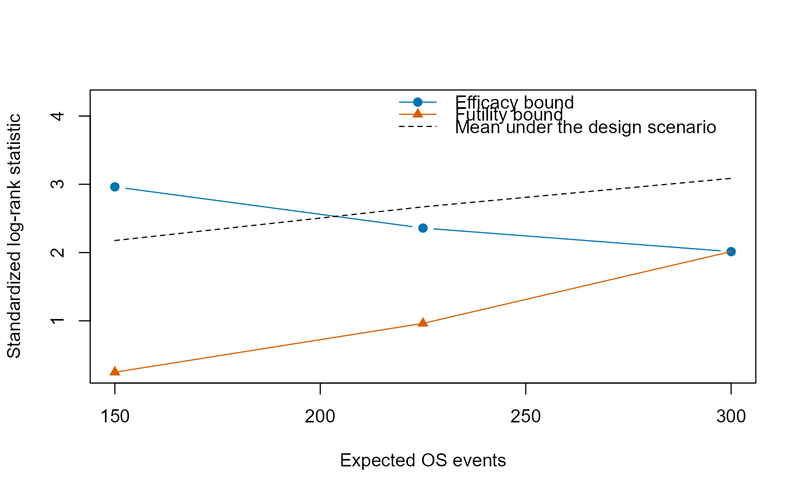
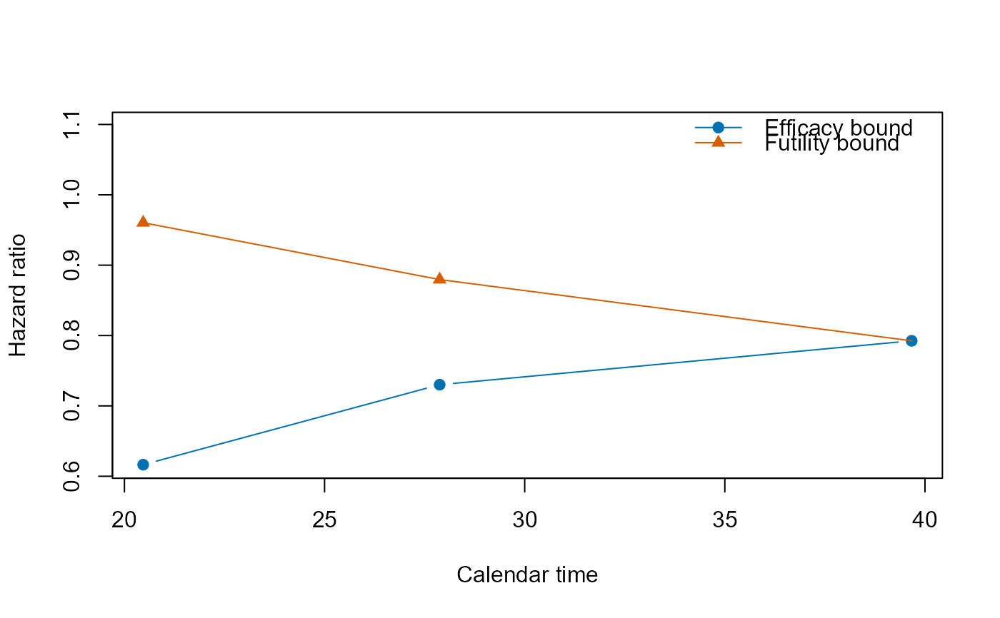
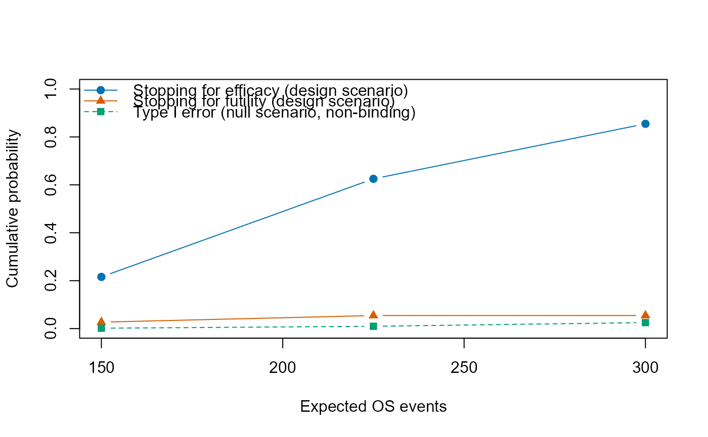
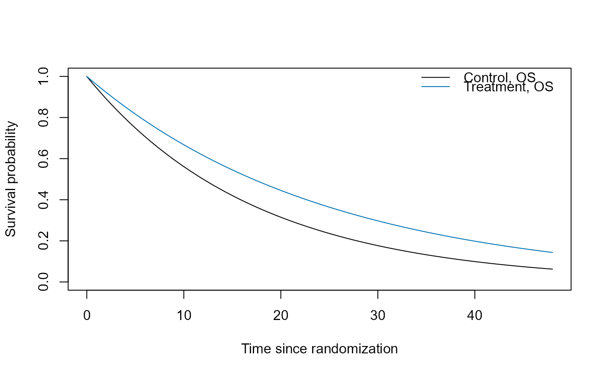

Draws the bounds of a group sequential design, the cumulative probabilities of stopping at the looks, or the survival functions of the groups of the design scenario.
Arguments
- x
An
ms_powerobject.- type
"bounds","power"or"survival".- scale
Scale of the bounds for
"bounds":"z","hr"or"p".- x_axis
Horizontal axis for
"bounds"and"power": the expected events of the tested endpoint ("events") or the calendar time ("time").- max_time
Largest time since randomization for
"survival"(defaults to the calendar time of the final analysis,x$study_duration).- ...
Named arguments passed to
plot(), such asmain,xlim,ylim,xlabandylab, which replace the defaults.
Value
The plotted values, invisibly: for "bounds" a data frame
with look, x (events or calendar time), the efficacy bound
upper, the futility bound lower (NA where there is
none) and, for "z", the mean mean; for "power" a
data frame with look, x, cum_efficacy,
cum_futility, x_null (events or calendar time of the looks
under the null scenario) and cum_alpha; for "survival" a
data frame with time, group, endpoint, surv
and the legend label label, with the note on OS as the attribute
"note" when switching starts at a calendar time.
Details
"bounds"The efficacy and futility bounds at the looks on the scale
scale: the standardized log-rank statistic ("z", with the mean of the statistic under the design scenario as a dashed line), the hazard ratio ("hr",hr_upperandhr_lowerofx$looks) or the nominal one-sided p-value ("p", on a log scale, withpnorm(z_lower, lower.tail = FALSE)for the futility bounds). The futility bound of the last look is the efficacy bound, to which the line of the futility bounds is drawn."power"The cumulative probabilities of stopping for efficacy (
cum_powerofx$looks) and for futility at the interim looks under the design scenario, and the cumulative non-binding type I error under the null scenario (cum_alpha), drawn at the looks under the null scenario (x$looks_null)."survival"The survival functions of OS and PFS of the control and treatment groups (
ms_surv) from 0 tomax_time. PFS is drawn when it differs from OS in a group, that is when the model allows progression. With switching from a calendar time (switch_startofms_scenario), OS is that of the patients who enter after the start of switching, as given byms_surv, which a note above the plot states.
The colors are those of grDevices::palette.colors(palette =
"Okabe-Ito"), and the default range of the vertical axis leaves room for
the legend above the values of "bounds" (below them for
"p") and "power". For
designs with two endpoints only "survival" is available.
Examples
ctl <- ms_model(death = log(2) / 12)
trt <- ms_model(death = 0.7 * log(2) / 12)
scn <- ms_scenario(ctl, trt, accrual = ms_accrual(rate = 20))
des <- ms_power(scn, n = 400, looks = ms_looks("os", fraction = c(0.5, 0.75, 1)),
test = ms_test(futility = "beta", sf_fut = "HSD", param_fut = -2),
events = 300)
plot(des)

plot(des, type = "bounds", scale = "hr", x_axis = "time")

plot(des, type = "power")

plot(des, type = "survival", max_time = 48)
